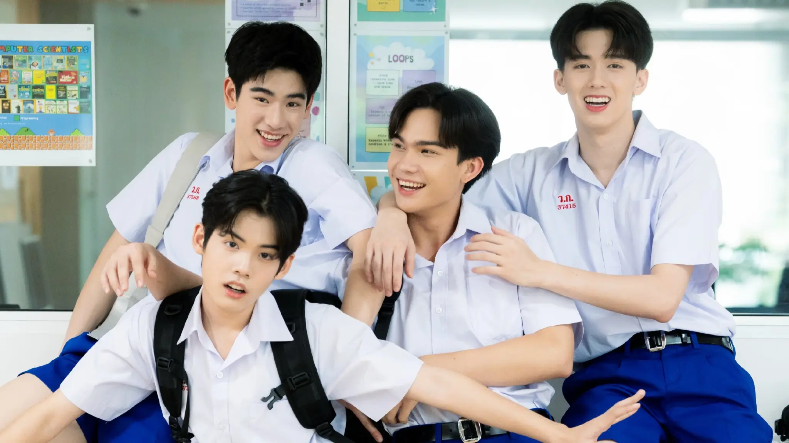

Windsor Careers Talento de todas las áreas. / FUTURE / 미래
Nuestro programa de pasantías 100% remoto está abierto a jóvenes profesionales de cualquier disciplina. Buscamos curiosidad, compromiso y ganas de aprender en un entorno digital real. — Learn by doing. Grow with a global team. — 함께 배우고, 함께 성장합니다.
Ideas que se vuelven proyectos. — Ideas into meaningful projects. — 아이디어를 프로젝트로.

Aprender haciendo. / DIRECTION / 방향
El talento crece cuando comparte ideas, asume retos y participa en proyectos reales. — from idea to meaningful action — 아이디어를 의미 있는 실행으로.
Conoce la experienciaAprendizaje práctico para cualquier perfil. / LEARNING / 배움
Windsor Careers es un programa de pasantías diseñado para que jóvenes talentos de Latinoamérica —de cualquier área— desarrollen sus habilidades trabajando en proyectos digitales reales, con acompañamiento profesional y metodología de trabajo ágil. — with human judgment — 사람의 판단과 함께.
No importa si estudiaste administración, psicología, comunicación, diseño, ingeniería o cualquier otra disciplina. Lo que valoramos es tu capacidad de aprender, tu curiosidad y tu compromiso. — with human judgment — 사람의 판단과 함께.
Ver beneficios¿Por qué ser parte de Windsor Careers? / FUTURE / 미래
Proyectos reales / PROJECTS / 프로젝트
Trabajarás en proyectos con clientes reales, desde la estrategia hasta la entrega. — with human judgment — 사람의 판단과 함께.
Aprendizaje continuo / LEARNING / 배움
Acceso a recursos, mentoría y feedback constante para que crezcas profesionalmente. — for continuous learning — 지속적인 배움을 위해.
100% remoto / DIRECTION / 방향
Trabaja desde cualquier lugar de Latinoamérica. Solo necesitas conexión a internet. — with clarity and purpose — 명확함과 목적을 담아.
Comunidad / COMMUNITY / 커뮤니티
Formarás parte de una red de jóvenes profesionales con intereses diversos. — for reflection, not diagnosis — 자기 이해를 위한 안내입니다.
Desarrollo de carrera / FUTURE / 미래
Construirás un portafolio sólido y ganarás experiencia para tu futuro profesional. — with human judgment — 사람의 판단과 함께.
Horarios flexibles / DIRECTION / 방향
Conciliamos el aprendizaje con tus otros compromisos. No es una jornada rígida. — for continuous learning — 지속적인 배움을 위해.
Buscamos talento de todas las áreas. / DIRECTION / 방향
Desde psicología hasta administración, desde diseño hasta ingeniería. Si tienes curiosidad y ganas de aprender, hay un lugar para ti en Windsor Careers. — from idea to meaningful action — 아이디어를 의미 있는 실행으로.
Administración / DIRECTION / 방향
Psicología / DIRECTION / 방향
Comunicación / DIRECTION / 방향
Marketing / DIRECTION / 방향
Diseño / IDENTITY / 정체성
Ingeniería / DIRECTION / 방향
Datos / Analytics / DIRECTION / 방향
Educación / LEARNING / 배움
¿Tu área no está en la lista? Postulá igual. Valoramos la diversidad de perspectivas. — with respect and inclusion — 존중과 포용을 바탕으로.
Así es nuestro proceso de selección. / METHOD / 방법
Queremos conocerte y entender qué te motiva. Nuestro proceso es ágil y transparente. — understand before building — 먼저 이해하고 만듭니다.
Postulación / DIRECTION / 방향
Completá el formulario de contacto con tu información y un breve mensaje sobre por qué te interesa Windsor Careers. — for continuous learning — 지속적인 배움을 위해.
Entrevista / DIRECTION / 방향
Conversaremos para conocer tu perfil, tus intereses y tu disponibilidad. Queremos entender qué te apasiona. — for reflection, not diagnosis — 자기 이해를 위한 안내입니다.
Prueba práctica / DIRECTION / 방향
Te daremos un pequeño desafío relacionado con tu área de interés para conocer tus habilidades en acción. — with clarity and purpose — 명확함과 목적을 담아.
Incorporación / DIRECTION / 방향
Si todo fluye, te daremos la bienvenida al equipo y comenzarás tu experiencia en Windsor Careers. — with human judgment — 사람의 판단과 함께.
“Windsor Careers me dio la oportunidad de trabajar en proyectos reales mientras terminaba la universidad. Aprendí más en 6 meses que en 3 años de carrera.”
— Ana Martínez, ex-pasante — with clarity and purpose — 명확함과 목적을 담아.
¿Querés ser parte de Windsor Careers? / FUTURE / 미래
Contanos quién sos, qué te apasiona y por qué querés sumarte a nuestro equipo. No importa tu área de estudio. — tell us what you are building — 만들고 있는 이야기를 들려주세요.